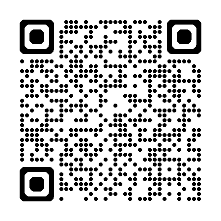

Realidade Aumentada
Aponte seu dispositivo para produtos com QR Code EcoTrace e visualize informações sustentáveis em tempo real.

Com RA, é possível ver dados como a pegada de carbono, origem de materiais e práticas sustentáveis diretamente no produto.